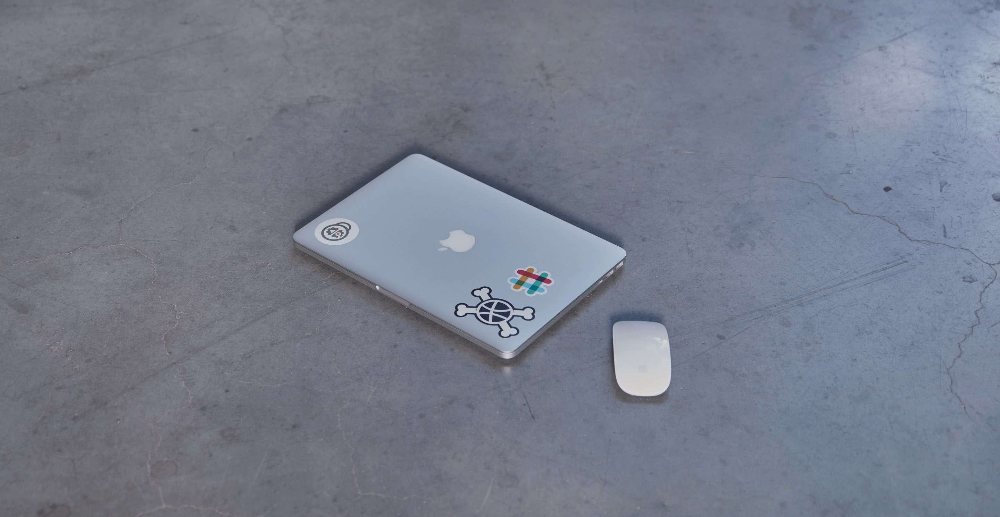

Yes. We. Are. Live.
At last, the day is upon us: our new website just went live! Admittedly, it has taken a fair amount of time, but we do feel the result justifies the wait. Time for a brief recap of the past few years, and even more importantly, a glance at the future ahead of us.
History
By late 2011, Jasper van Orden and Laurens Boex joined forces to establish Rodesk. Spilling over with enthusiasm,they set about to be a creative service provider out to help companies in their online activities. This was always done starting from the user’s viewpoint (UX design) in terms of strategy (Laurens) and design (Jasper). It has proven to be a successful approach; four years on we can safely say that we built our business on strong foundations. The growth that we’ve been through has made us pretty confident about the future.

Another thing the brief existence of Rodesk has pointed out is that there’s still plenty of room for improvement. Further improvement of the experience of our digital products and services demands that we expand our team with a strong dose of technical development expertise.
That is why in 2014, Jasper and Laurens asked me, Jasper Rooduijn (formerly 12HOOG) on board, and the resulting cooperation has been a great experience for all parties involved.
Present
This has prompted Rodesk and 12HOOG to engage in a merger under the name Rodesk. As per January 1 2015, I joined the ranks of Rodesk as a third partner, assuming responsibility for technical development. Once underway, the co-op proved very successful, resulting in a very rewarding 2015. The hustle and bustle of the year’s activities has left us with precious little time to spend on our own (reinvented) identity and website. Now, by the onset of 2016, we finally managed to cast them into form, and you are witnessing the results right now. She turned out nice in the end, don’t you agree?
We felt we could use a bit of practise what you preach around here. What’s more, we still have plenty of stuff planned on our own release schedule, so don’t worry: things will only get better from here.
We have applied this principle more strictly to our own website as well, and this initial release is the result.

Future
The present website is the first release in a comprehensive plan of attack; an approach we increasingly use in our projects. As our team grew, Rodesk has become more agile. Although we have been employing scrum methods since day one, we have been improving our game over the years. In projects, we tend to start out with a slender first release to get online fast, and from there on we keep on developing our online products or services. Particularly since ever more of our principals need digital transformation, working in short sprints has kept on proving to be a great solution. Gone are the days when a website was a static place used for posting content; today, it is a living tool for generating opportunities to let the digital domain actually contribute to organisational goals.
Contribute to our future and feel free to leave us a note about our new movement. We hope you like it.

- Jonathan Reijneveld
- Journal /
Sketch Plugins That Will Make Your Life Easier
Sketch has become a important part of our workflow, for our designers as well as our coders.
Read more